Philippines 2002
Visited Manila
| フィリピンの首都メトロ・マニラ（マニラ首都圏）は、以前の首都だったケソン(Queson)市など13の行政地域の集まり。 マニラ地区にはスペイン統治時代の歴史的、文化的遺産が多く残されている。 スペイン人がフィリピン統治の根拠地とした要塞都市・イントラムロスにはサン・オーガスティン教会、マニラ大聖堂、 スペイン風の街並みなどが残っていて観光客の目を引いている。サンチャゴ要塞(Fort Santiago)にはフィリピンの国民的英雄、ホセ・リサールの記念館もある。 |
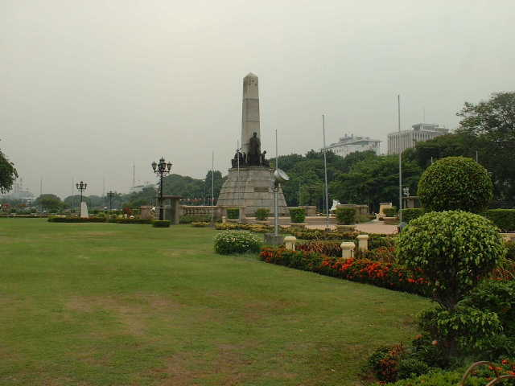
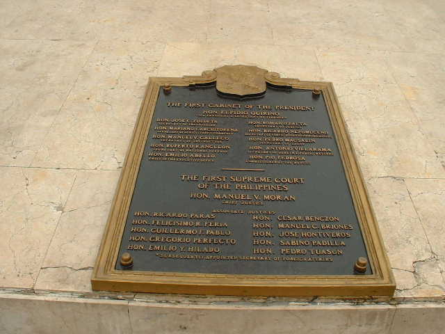
ホセ・リサール(Jose Rizal)のモニュメント(左)
(みやげ物売りに執拗に"つきまとわれ"ゆっくり見物出来なかった)
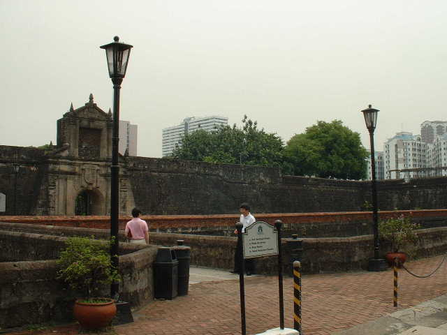
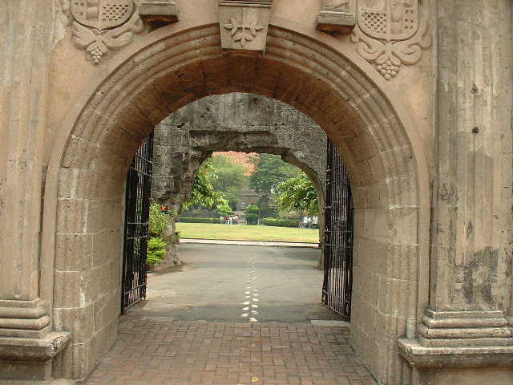
スペイン統治時代の面影が残るサンチャゴ要塞
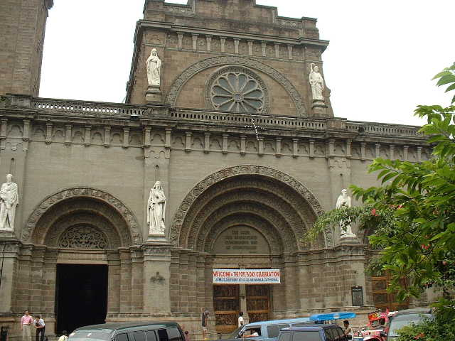
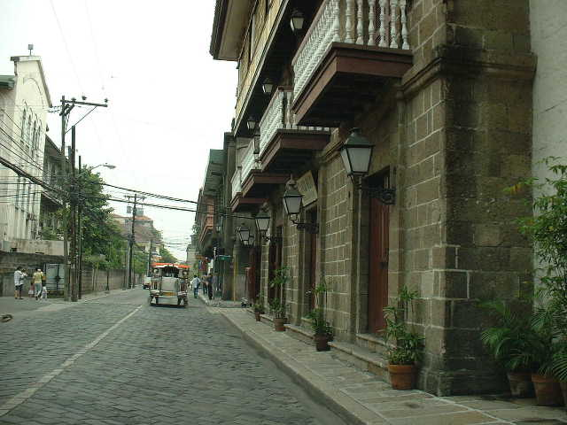
マニラ大聖堂(Manila Cathedral)と石畳の道路が残るスペイン風の街並み
|
◎ アメリカ記念墓地 マニラ市内を見下ろす高台にあるアメリカ記念墓地は、第二次世界大戦中、フィリピンで戦死した17,000人のアメリカ軍人が安置されている。 ゲートの警備兵から「この場所は観光地では無い」と書かれた注意書きのパネルを読まされ、静かに車を乗り入れる。 |
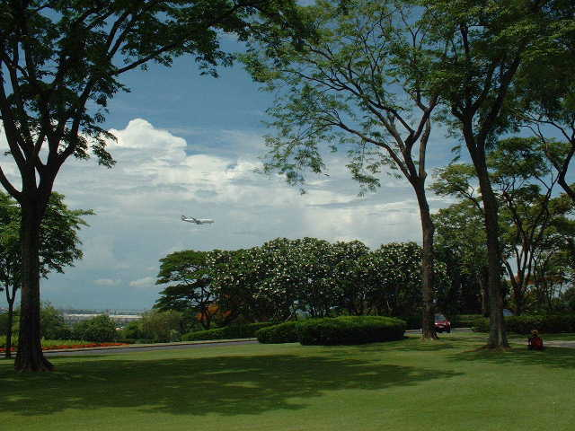
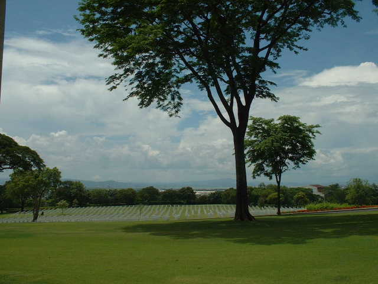
緑の芝生に白い十字架が映え、美しく厳かな感じ
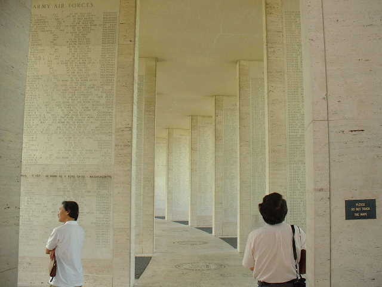
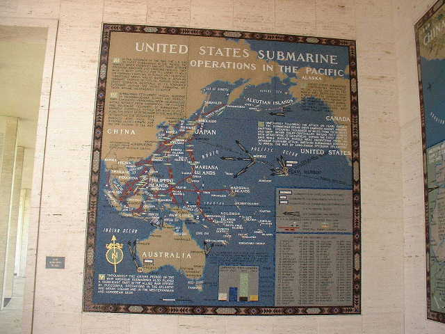
太平洋戦争のアメリカ人戦死者の氏名と戦闘の模様が描かれている壁
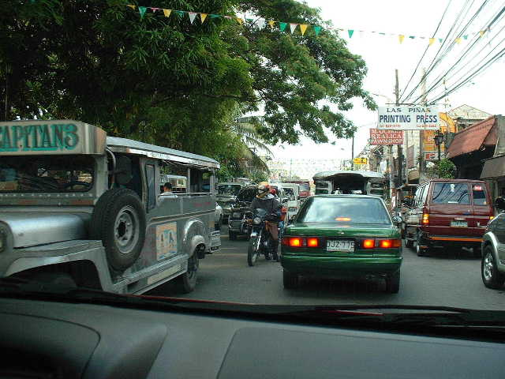
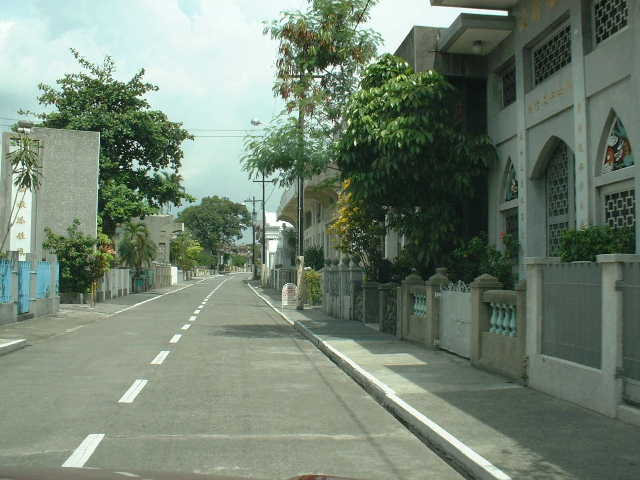
車が溢れいつも混雑しているフィリピンの市街地(左)
人っ子ひとり見かけない"ゴーストタウン"... と思われたのは、中国人(華僑)の"お墓の町"
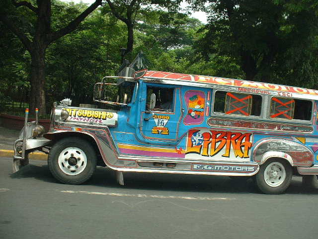
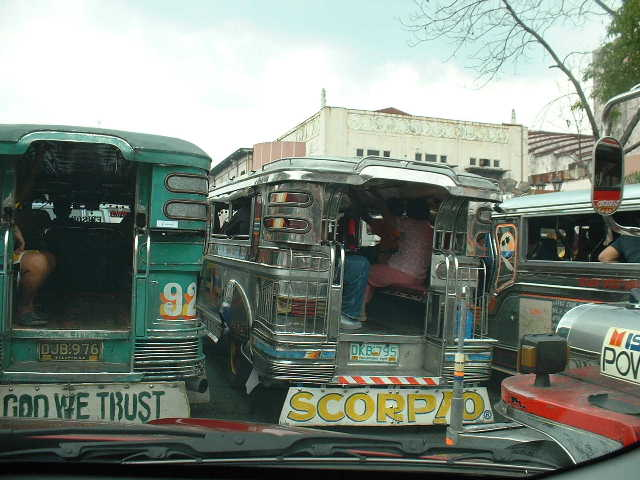
フィリピン名物の小型バス"ジプニー"。車線より1台分は余分に並んで走行するので怖い！
 |
Visited Manila Top |